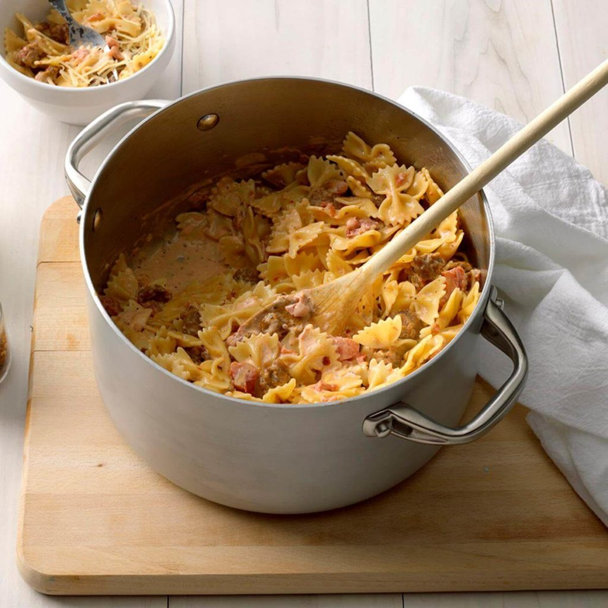

Italian Sausage with Bow Ties
Ingredients
1 package (16 ounces) bow tie pasta
1 pound bulk Italian sausage
1/2 cup chopped onion
1/2 teaspoon crushed red pepper flakes
1-1/2 teaspoons minced garlic
2 cans (14-1/2 ounces each) Italian stewed tomatoes, drained and chopped
1-1/2 cups heavy whipping cream
1/4 teaspoon salt
1/4 teaspoon dried basil
Shredded Parmesan cheese
Directions
- Cook pasta according to package directions. Drain.
- Meanwhile, in a 6-qt. stockpot, cook and crumble sausage with onion and pepper flakes over medium heat until no longer pink, 5-7 minutes. Add garlic; cook 1 minute. Drain.
- Stir in tomatoes, cream, salt and basil; bring to a boil over medium heat. Reduce heat; simmer, uncovered, until thickened, 6-8 minutes, stirring occasionally. Stir in pasta; heat through. Serve with cheese.
Nutrition Facts
1-3/4 cups: 751 calories, 44g fat (21g saturated fat), 119mg cholesterol, 989mg sodium, 67g carbohydrate (9g sugars, 4g fiber), 23g protein.
Total Time
Prep/Total Time: 25 min.